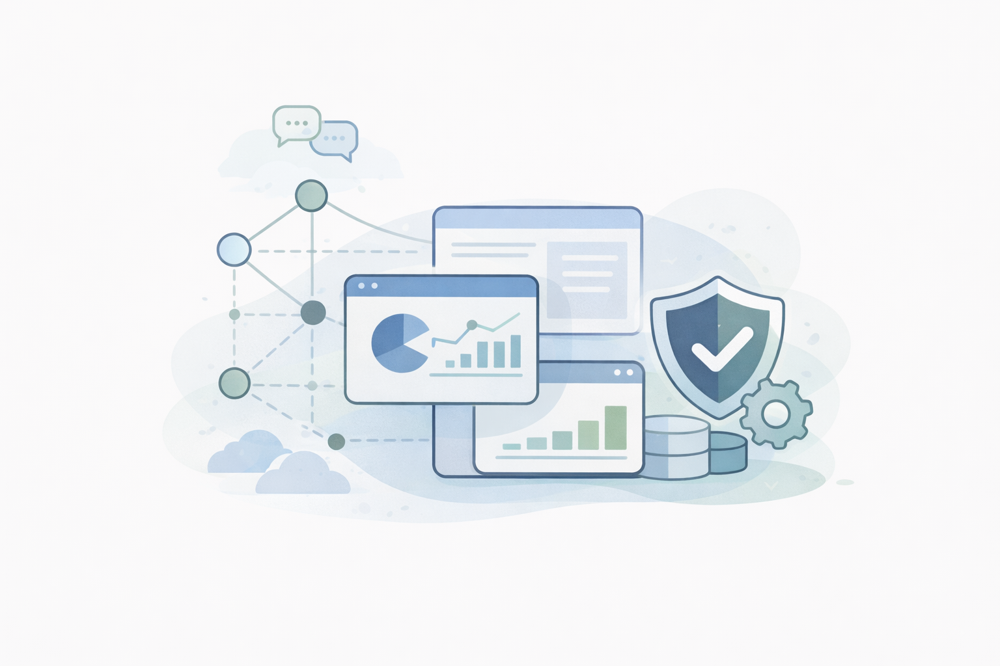
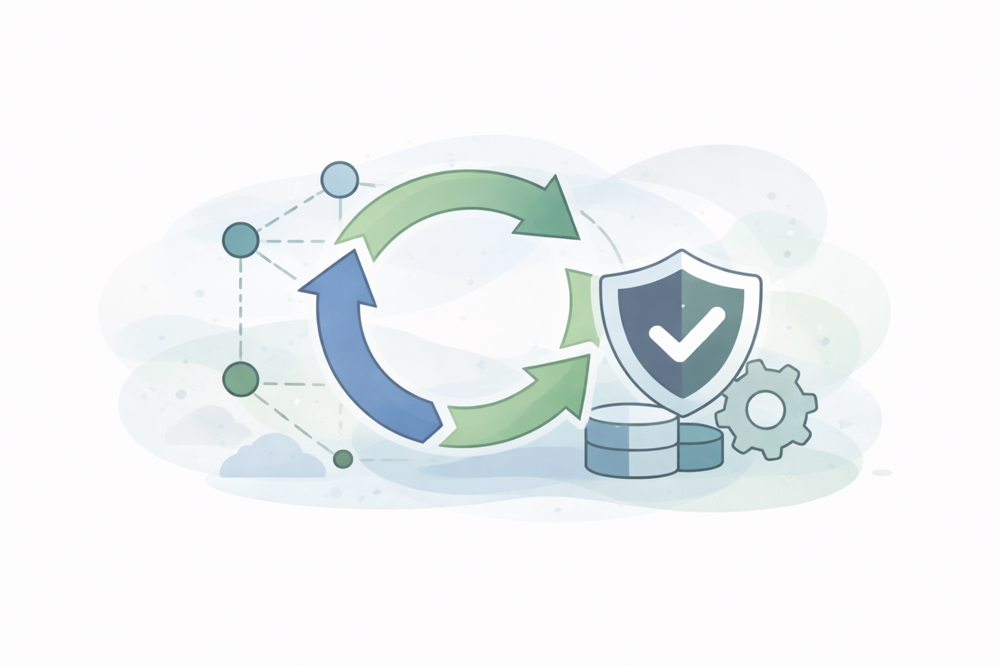

Data-Driven Web Applications
Applications that collect, manage, and present research or operational data over long time horizons.
Academic Research Technologies LLC partners with research groups, educational programs, and mission-driven organizations to build, maintain, and improve software over time. We’re flexible in how we engage and are accustomed to working within the practical constraints of research — timelines, budgets, and institutional processes.

Research and educational software often evolves over many years, across changing teams, funding sources, and technical environments. We work with groups at all points along that path — whether you're starting something new, inheriting an existing system, or trying to keep important software running smoothly.
Our role is to meet teams where they are and provide support that fits their goals, constraints, and working style.
Our work typically includes:
We design and build new applications, and improve existing ones — always with a focus on clarity, usability, and accessibility. When working with existing systems, we favor targeted improvements over wholesale rewrites.
We provide ongoing support for long-running systems, including security updates, dependency management, bug fixes, and infrastructure oversight — helping keep software stable, secure, and understandable as teams and technologies change.
We help teams think through technical decisions early and realistically. This includes sustainability planning, maintenance scoping, transition planning, and technical consultation, as well as preparing cost estimates, technical descriptions, and letters of support for grant proposals.
Across all of this work, we prioritize clear communication, reliability, and long-term viability — while staying flexible in how we engage.
Research and educational software takes many forms — from new ideas and pilot projects to long-running systems that have evolved across multiple grants, teams, and technologies. We're comfortable working with projects at any of these stages, including inherited systems, tight timelines, and well-defined improvement goals.
Applications that collect, manage, and present research or operational data over long time horizons.
Incremental upgrades that reduce risk and improve maintainability while preserving existing workflows.
Connections between research platforms like REDCap and Qualtrics, external APIs, automated data flows, and the backend services that keep them running reliably.
Custom data models supporting lab workflows, longitudinal studies, and evolving research needs.
Public-facing platforms supporting large, distributed audiences contributing data over time.
Tools that help researchers, educators, and the public explore and understand complex datasets.
Targeted improvements to usability, accessibility, and responsiveness in existing software.
Applications designed to support teaching, learning, and instructional research.
Tools supporting data collection, study participation, and field-based research workflows.
Platforms for sharing research outputs, datasets, and findings with broader audiences.
We don't have a preferred tech stack. Much of our work starts by stepping into an existing codebase — a system someone else built or on infrastructure already in place. We've worked across a wide range of languages, frameworks, and platforms, and we're comfortable picking up new ones when a project calls for it. We work within existing technical contexts rather than pushing to start over.
When there are real choices to make, we pick tools based on what the project needs, how well the team can maintain them, and whether they'll still make sense in five years.
Choosing well-supported, unsurprising options. Working with what teams already know. Documenting decisions clearly so the system stays understandable as people come and go.

Done well, maintenance is how research software stays usable across years and team changes. Without ongoing care, even well-designed systems can become harder to use, less secure, or increasingly fragile over time.
We approach maintenance as practical, professional stewardship — focusing on keeping systems dependable and understandable as contexts change:
In practice, this work is about reducing risk, avoiding surprises, and helping teams focus on their research rather than their infrastructure.
Sustaining software over time often requires funding approaches beyond short-term grants. We work collaboratively with project teams and institutions to identify models that fit administrative realities, budgets, and timelines.
Common approaches include institutional maintenance agreements, restricted maintenance funds, membership support, and maintenance line items in new or follow-on grants. Many projects use a combination of these approaches over time, and we adapt to what works in each context.
Every project and research group operates a little differently. Engagements are scoped collaboratively to reflect your goals, timelines, funding realities, and institutional constraints — whether you need a short burst of focused help or an ongoing technical partner.
Common engagement patterns include:
Annual or multi-year agreements supporting long-running or public-facing systems. This model works well when you want a trusted partner available to handle maintenance, small improvements, and emerging issues over time.
Fixed-scope or time-boxed work for targeted enhancements, integrations, or modernization efforts. Projects are scoped to be realistic and achievable within available time and funding.
Short, focused engagements to help teams understand the current state of a system, identify risks and priorities, and prepare sustainability plans, cost estimates, and technical documentation for proposals.
Lightweight, ongoing consultation for teams with in-house development capacity who want a reliable, experienced sounding board for technical decisions, planning, and problem-solving.
Many teams start with one engagement type and evolve over time. We're comfortable adjusting scope and approach as projects, funding, and priorities change. If you're unsure which model fits, we'll talk it through.
Academic Research Technologies LLC is led by Garrett Smith, a software developer with 13 years of experience building and maintaining research and educational software. Garrett works full-time at the University of Wisconsin-Madison, where he has spent his career working closely with research teams, academic programs, and the practical realities of university software — funding cycles, institutional constraints, and systems that need to keep running long after a project ends. Academic Research Technologies LLC operates independently and is not affiliated with the University of Wisconsin.
Academic Research Technologies LLC operates as an independent consulting practice, working alongside universities, nonprofits, and research organizations across institutions. Engagements are handled with the same care and professionalism you'd expect from an in-house team — with the flexibility of an external partner.
We work with research groups, academic programs, and nonprofits that depend on software running reliably over years.
This includes universities and academic units, nonprofit and educational organizations, and multi-institution collaborations. Engagements may be project-based, retainer-based, or advisory, depending on what's most useful for the team.
References can be shared as part of initial conversations.
First conversations are low-key. We'll cover the basics — what the software does, who uses it, where it stands, and any timeline or funding constraints — and figure out whether there's a good fit.
If you're interested in starting a conversation, it's helpful to include:
This isn't a formal intake — just enough context to make the conversation productive.